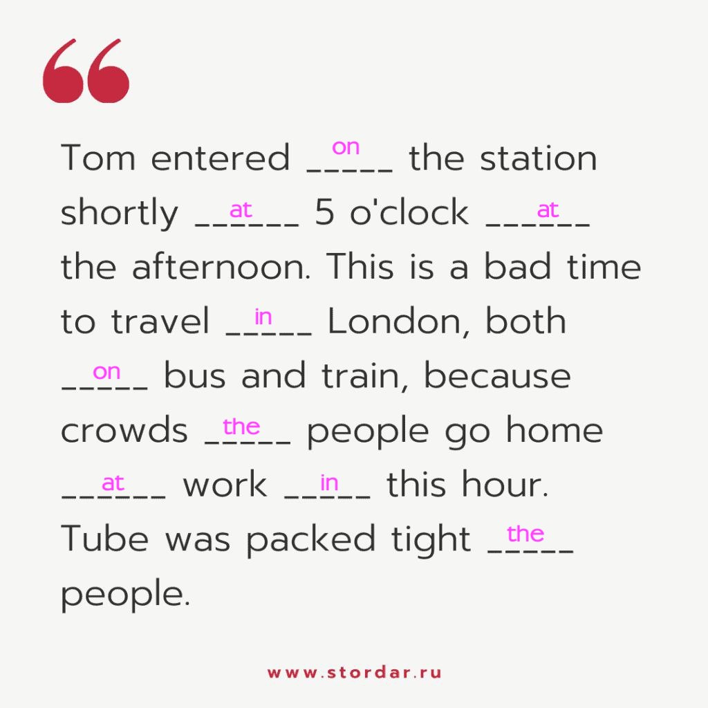
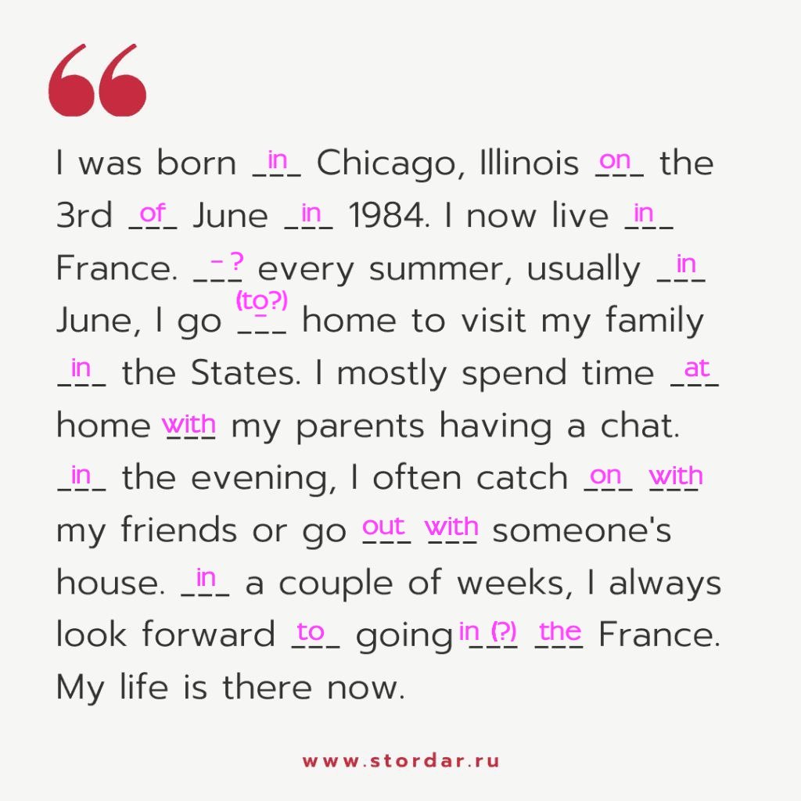

Danil's homeworks
Comparisons of Adjectives (Степени сравнения прилагательных)
Exercise 1. Comparisons.
- bad - worse - the worst
- beautiful - more beautiful - most beautiful
- big - bigger - the biggest
- bright - brighter - the brightest
- cheap - cheaper - the cheapest
- clean - cleaner - the cleanest
- clever - cleverer - the cleverest
- comfortable - more comfortable - most comfortable
- dark - darker - the darkest
- dirty - dirtier - the dirtiest
- dry - drier - the driest
- flat - flatter - the flattest
- early - earlier - the earliest
- easy - easier - the easiest
- expensive - more expensive - most expensive
- famous - more famous - most famous
- far - farther (or further) - the farthest (or the furthest)
- fat - fatter - the fattest
- fresh - fresher - the freshest
- full - fuller - the fullest
- funny - funnier - the funniest
- good - better - the best
- happy - happier - the happiest
- heavy - heavier - the heaviest
- hot - hotter - the hottest
- important - more important - most important
- large - larger - the largest
- late - later - the latest
- lazy - lazier - the laziest
- little - littler (или smaller) - the littlest (или the smallest)
- much - more - most
- near - nearer - the nearest
- nice - nicer - the nicest
- pale - paler - the palest
- practical - more practical - most practical
- pretty - prettier - the prettiest
- quick - quicker - the quickest
- quiet - quieter - the quietest
- rich - richer - the richest
- sad - sadder - the saddest
- short - shorter - the shortest
- thick - thicker - the thickest
- thin - thinner - the thinnest
- ugly - uglier - the ugliest
- weak - weaker - the weakest
- wet - wetter - the wettest
Exercise 2. Comparisons.
- That house is too small for our family. We need something much bigger (big).
- I can't understand you. Could you speak a bit louder (loud), please?
- This coffee is bitter. I prefer to drink it a little sweeter (sweet).
- That dress is very expensive (expensive). I can't afford to buy it.
- Fiona is by far the most intelligent (intelligent) girl in the class.
- It was very cold yesterday, but it's slightly warmer (warm) today.
- I don't go to that supermarket anymore. This one is far cheaper (cheap).
- I like living near the city. It's a lot more convenient (convenient).
Exercise 3. Comparisons.
- The Trans-Siberian railway is the longest (long) in the world.
- The twenty-second of December is the the shortest (short) day of the year.
- Iron is the most useful (useful) of all metals.
- The Dnypro is wider (wide) and deeper (deep) than the Dunai River.
- Everest is the highest (high) peak in the world
- His plan is more practical (practical) than yours.
- His plan is the most practical (practical) of all.
- This room is smaller (small) than all the rooms in the house.
- London is the largest (large) city in England.
- Silver is heavier (heavy) than copper.
- Our house is lower (low) than yours.
- This exercise is better (good) than the last one.
- My cigarettes are worse (bad) than yours.
- Yesterday was the hottest (hot) day we have had this summer.
- When the war ended, the reconstruction of Krakow was resumed on a larger (large) scale than before.
- The Battle of Waterloo was the greatest (great) battle of all times.
Exercise 4. Comparisons.
-
- A: Why are you crying?
- B: I've just read he saddest (sad) book ever written.
-
- A: Do you like crisps?
- B: Yes, but I think chocolate is much tastier (tasty) then crisps.
-
- A: This must be the hottest (hot) day of the year.
- B: I agree. Let's go swimming.
-
- A: Kate is a lot prettier (pretty) then Anne.
- B: Yes. She's the prettiest (pretty) girl I know.
-
- Is this ladder longer (long) than the other one?
- B: They look the same to me.
-
- A: That was by far the best (good) cake you've ever made.
- B: I'm glad you enjoyed it.
-
- A: Do you like this dress?
- B: Oh, yes. It's the most beautiful (beautiful) dress I've ever seen.
-
- A: Mount Everest is the highest (high) mountain in the world.
- B: Everyone knows that!
-
- A: Mr. Smith is older (old) than Mr. Jones.
- B: Well, he looks good for his age.
-
- A: Did that coat cost a lot of money?
- B: Yes, it was by far the most expensive (expensive) coat in the shop.
-
- A: Thank you for your help.
- B: That's okay. If you need any further (far) advice, come and see me.
Exercise 5. Comparisons. Use as ... as or so ... as
! Notice
Для сравнения двух предметов одинакового качества прилагательное в положительной степени ставится между as ... as со значением такой же ... как, так же ... как
В отрицательных предложениях первое as обычно заменяется so
- The temperature to-day is as high as it was yesterday.
- He is not so old as he looks.
- He is as strong as his brother.
- This street is as wide as the next one.
- The trunk is not so heavy as I expected it to be.
- His radio set is not so powerful as mine.
- She is as tall as her sister.
- In Finland it is not so hot as in Rome.
Exercise 6. Comparisons. Correct mistakes
- I'm
cleverestcleverer than my brother. - New York is
modernermore modern than London. - Mary is pleasanter than Jannet. (all correct)
- Jannet is politer than Mary. (all correct)
- They are
busyerbusier than we are. - My sentence is
correctermore correct than yours. - This exercise is
more easyeasier than that one. - You must be more
carefullercareful. - I was
mostmore surprised than he was. -
This machine is the simplest
thanof the others.orThis machine isthe simplestsimpler than the others. - He gets
stupidermore stupid every day. - Can you come
more earlyearlier next time? - I am handsomer than my brother. (all correct)
- Spain is
driestdrier than Britain.
Exercise 7. Comparisons. Open the brackets and add the necessary words
Yesterday was 1) the coldest (cold) day of the year. It had been snowing all night and everything was white. The children woke up 2) earlier than (early) usual. They were excited because the snow was 3) (deep) deeper than ever before and they wanted to go outside and play. We dressed them in 4) the warmest (warm) clothes we could find, then they went out into the garden. We watched from the window as they built 5) the biggest (big) snowman I have ever seen. As the snow was falling 6) (hard) harder than ever, the children soon came inside to warm up. They were laughing as if they had heard 7) the funniest (funny) joke ever told. They said that they thought winter was 8) the best (good) season of all.
Exercise 8. Comparisons. Strike out the unnecessary words
- Mark's voice is very much louder than Alan's. (all correct)
- Mrs. Garrison is the
mostoldest teacher in the school. - This village is
by farquieter than the one we live in. - Playing golf isn't as
moretiring as playing football. - As time went by, it got darker
and the darker. - The more you study, the better
thanyour marks will be. - This task is
theless difficult than the others. - He drives the
farfastest of all. - Jane is as
muchtall as Sarah. - It was a quite an exciting film. (all correct)
Prepositions (Предлоги)
Exercise 1
-
Tom entered on the station shortly at 5 o'clock at the afternoon. This is a bad time to travel in London, both on bus and train, because crowds the people go home at work in this hour. Tube was packed tight the people.
The first choices of answers:
 -
I was born in Chicago, Illinois on the 3rd of June in 1984. I now live in France. Every summer, usually in June, I go - to(?) home to visit my family in the States. I mostly spend time at home with my parents having a chat. In the evening, I often catch on with my friends or go out with someone's house. In a couple of weeks, I always look forward to going in(?) the France. My life is there now.
The first choices of answers:
